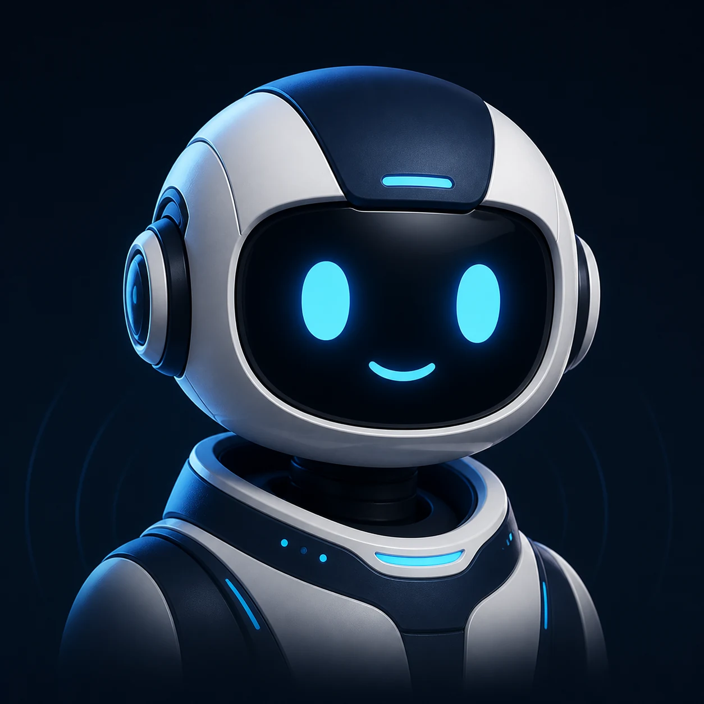
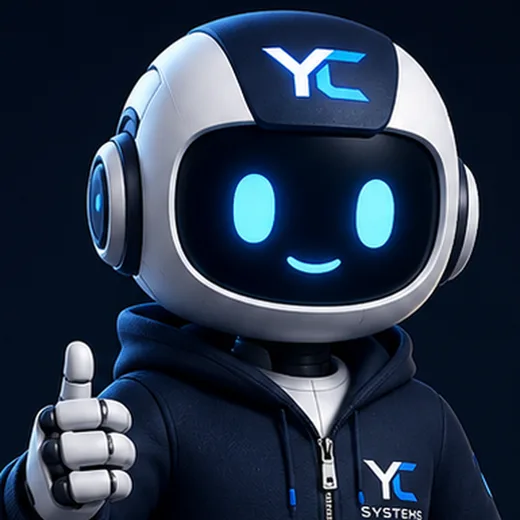

Nen Lab · Control interno
Sistema visual vivo
Galería no indexable para validar identidad, estados, expresiones, componentes y movimiento antes de publicarlos en una página.
Cinco modos operativos
Un solo sistema, estados reconocibles

Expresiones
Doce respuestas dentro de la misma identidad
Feliz
Curioso
Pensando
Explicando
Saludando
Esperando

Confirmando
Alerta suave
Sin resultados
Procesando
Celebración controlada
Componentes
Piezas reutilizables y fallbacks
Una primera fase visible
El alcance debe poder explicarse, medirse y validarse sin depender de promesas vagas.
NenRuta inicial recibida
Ruta inicial recibida
Revisaremos el contexto y responderemos con el siguiente paso recomendado.
Organizando información
NenAún no hay señales suficientes para proponer una ruta.